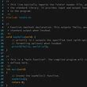
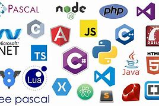

que es programacion
La programación es una de las etapas para el desarrollo de un programa o software. La programación especifica la estructura y el comportamiento de un programa verificando si está funcionando adecuadamente o no. La programación incluye la especificación del algoritmo definida como la secuencia de pasos y operaciones que el programa debe realiza
para que sirve
lgunas de las soluciones de la programación, se suelen ubicar en la automatización de tareas. Así también en procesos de contabilidad, bases de datos, procesadores de textos, hojas de cálculo entre otros. "Por medio de la programación se diseña, codifica, limpia y protege el código fuente de los programas de los ordenadores" dijo Cruz.
lenguajes de programacion
Clasificamos los lenguajes de programación según el nivel de abstracción, según la forma de ejecución y de procesar pedidos, según el paradigma de programación que usan, entre otros. Una de las clasificaciones más útiles es aquella que clasifica los lenguajes según el paradigma de programación.
